はじめに
VMC（V_moshi_code）は、大阪進研の進研Vもしで使用する志望校コードを検索するツールです。
正引き(コードから学校名)と逆引き(学校名からコード)の両方に対応しています。
また、たまに使えなくなることがあるスクリーンショット機能を搭載しており、印刷して紙での管理・確認も可能です。
インストール・準備
ダウンロードしたファイルは以下の手順で有効化します。
- ダウンロードしたファイルを右クリック
- 「プロパティ」をクリック
- 「全般」タブの最下部にある「セキュリティ」のセクションで、「許可する(K)」にチェックを入れる
- 「適用」→「OK」をクリックしてプロパティウィンドウを閉じる
- ダウンロードしたVMC-VMoshiCodeファイルをExcelで開く
- リボンと数式バーの間の黄色の帯が表示された場合は、「編集の有効化」をクリック
- リボンと数式バーの間の赤色の帯が表示された場合は、１～４の工程をやり直す
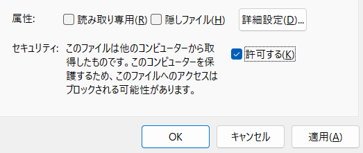
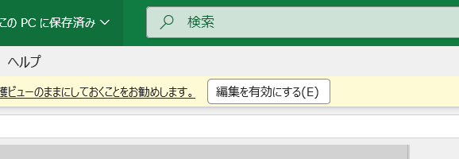
※それでもうまくいかない場合は、「信頼できる場所」にファイルを移動するように
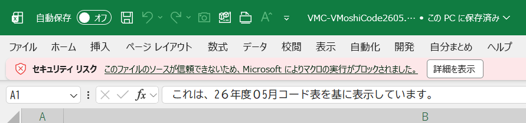
使い方
正引き（コードから学校名）
- VMC-VMoshiCodeファイルを開く
- 黄色の「コードで検索」ボタンをクリック
- 表示された画面の中学校・第１～６志望の欄にコードを入力
- 画面右の「検索」ボタンをクリックし、対応する学校名を表示
エラー表示：E-len→桁数エラー、NotFound→検索結果なし - 任意で、「スクショ」ボタンをクリックしてスクリーンショットを撮影可能
(撮影できると「保存状態：済」と緑の文字が表示される)
画像は、VMCのファイルと同じ場所のvもしpicというフォルダに保存され、「保存場所」ボタンで表示可能 - 学校を変更したい場合は、「学校変更」ボタンで変更可能
使い方は、以下の逆引きの手順通りだが、閉じるときに「適用して閉じる」にしないと反映されないので注意
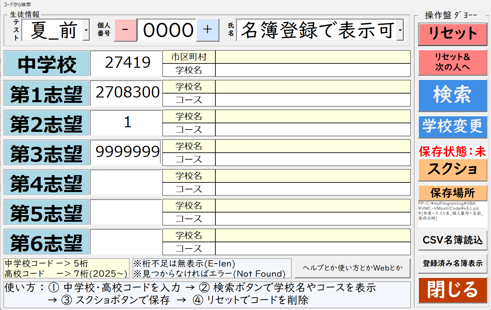
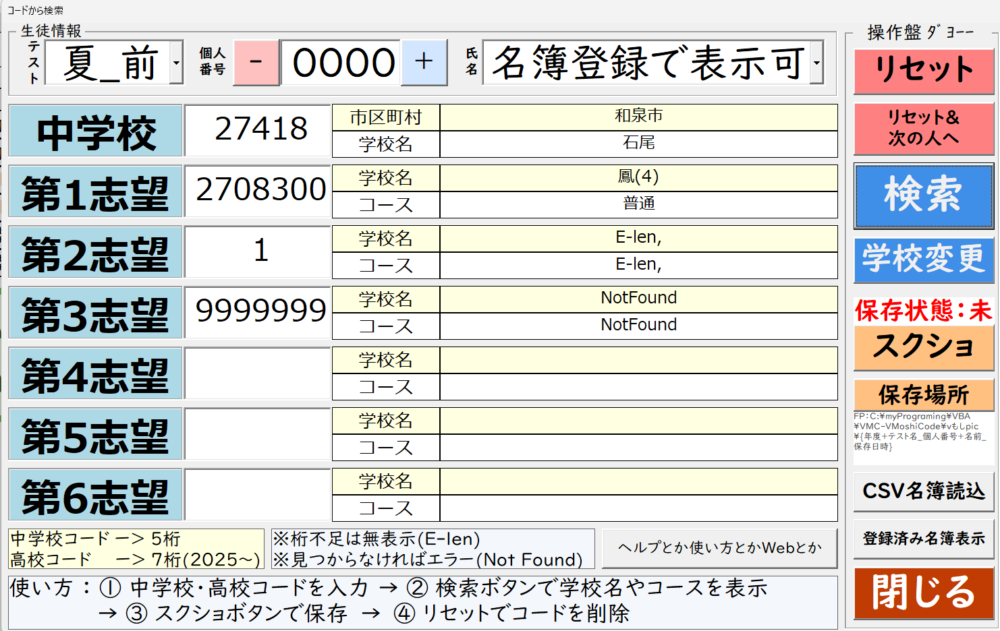
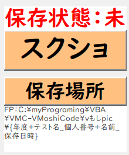
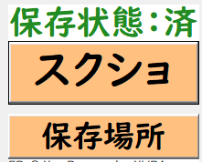
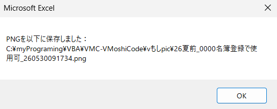
逆引き（学校名からコード）
- VMC-VMoshiCodeファイルを開く
- 青の「学校名で検索」ボタンをクリック
- 表示された画面の①にある中学校・第１～６志望のいずれかの欄を選択
選択すると、黒丸が表示される(例は中学校を選択している) - 画面中央上部の②の欄に中学校であれば市区町村名を、高校であれば高校名を入力
- その下の黄色い欄に表示された検索結果をクリック
- 続けて③の黄色い欄に中学校であれば中学校名が、高校であればコース名が表示されるのでそれをクリック
- 画面右下にある④の登録ボタンをクリックすると、①の項目欄のかっこ[]内にコードが表示される
- 閉じる際は、閉じるボタンをクリックする
正引きの「学校変更」ボタンで表示した場合は、「適用して閉じる」を選ばないと登録結果が反映されないことに注意
反映したくない場合は、「閉じる」を押す
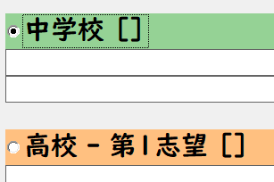
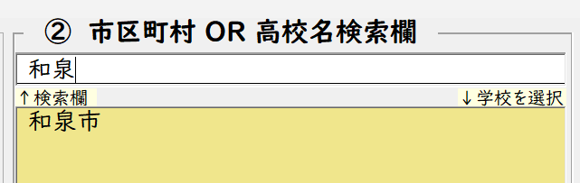
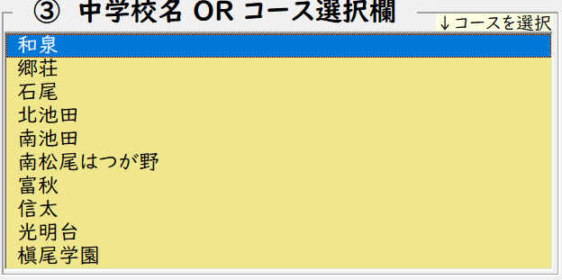
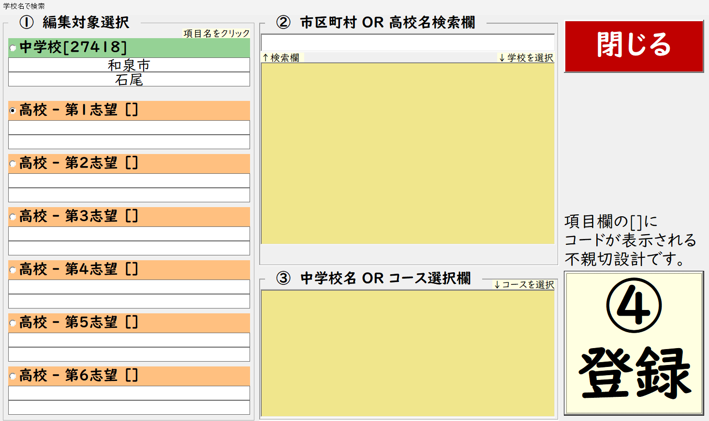
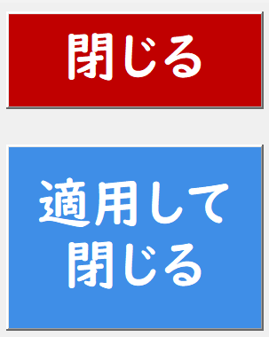
FAQ
- Q: 操作方法が分かりません
-
上の「使い方」のセクションに、正引きと逆引きの両方の手順を詳しく説明しています。
まずはそちらを確認してみてください。
正引きの画面はボタンがいっぱいでややこしいと思うので、「ヘルプ」ボタンを用意しています。
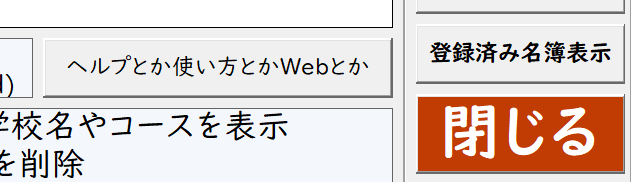
クリックすると、各ボタンの説明が表示されるので、分からないボタンがあれば確認してみてください。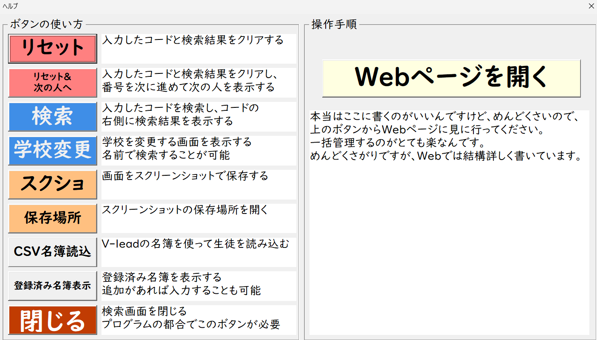
- Q: なぜファイル名がアルファベットなのですか？ふざけていますか？
-
一番の理由は、アルファベットじゃないとアップロードでエラーになるからです。
あと、ファイルを開くときに「VMC」って入力するだけで検索できるので楽だなーみたいな
Visual Studio CodeをVSCodeって検索できるのを真似して、VMCにしました。
まあもちろん、ふざけています。ふざけていないとこんなもの作れる精神を維持できません。 - Q: 印刷方法は？
-
「コードで検索」のスクリーンショット(png形式の画像)を印刷してください。
保存場所は、VMCのファイルと同じ場所のvもしpicというフォルダで、「保存場所」ボタンで開けます。
フォルダーの写真を選択→右クリック→「印刷」で印刷用画面が表示されます。 - Q: 印刷の設定を変更したい
-
上記方法で印刷画面まで表示した後、画面右側に印刷レイアウトが複数表示されます。
その中から、好みのレイアウト(2in1、4in1など)を選択して印刷してください。
画像が拡大されて端が見切れる場合は、「写真をフレームに合わせる」のチェックを変更してみてください。 - Q: スクリーンショット機能が使えない
-
スクリーンショット機能は、Excelのバージョンやセキュリティ設定によっては正常に動作しないことがあります。
その場合は、手動でスクリーンショットを撮るか、印刷機能を使用して紙で管理することをおすすめします。
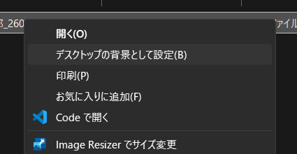
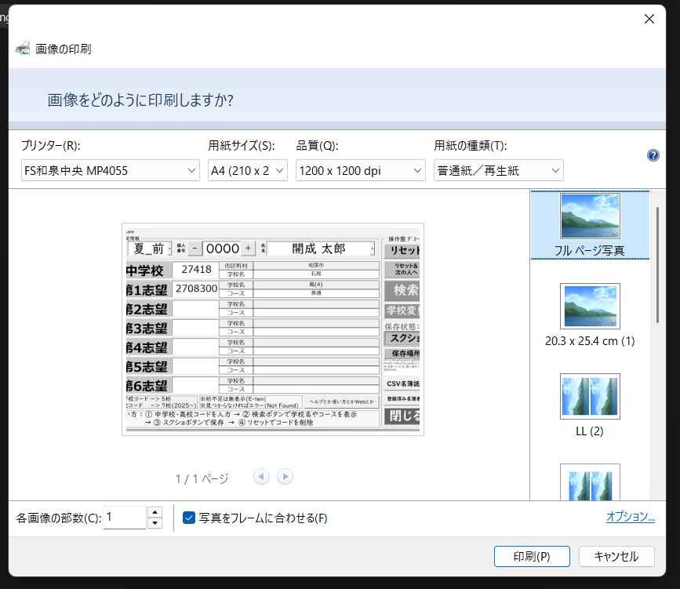